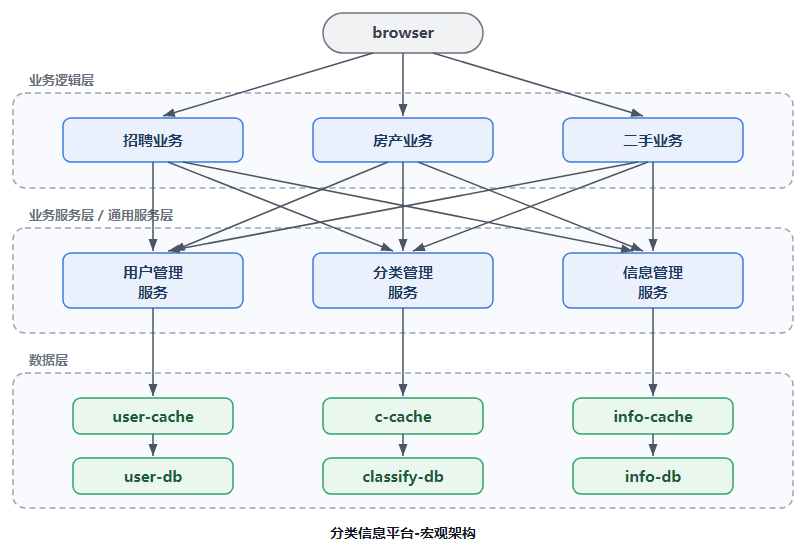
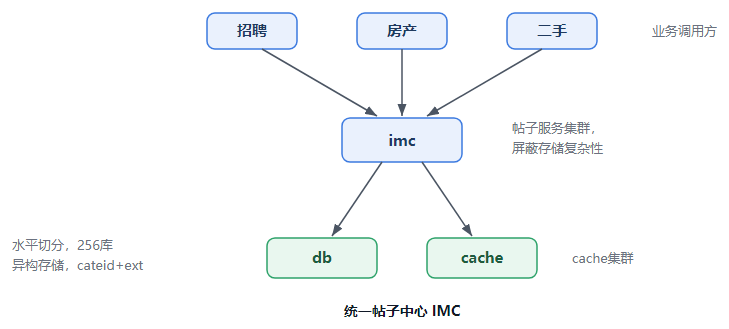
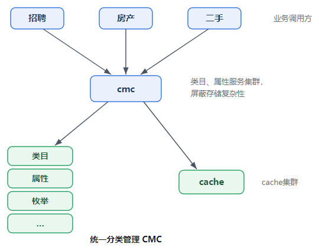
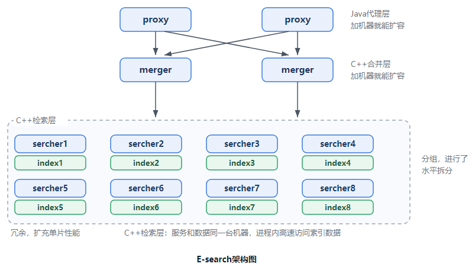
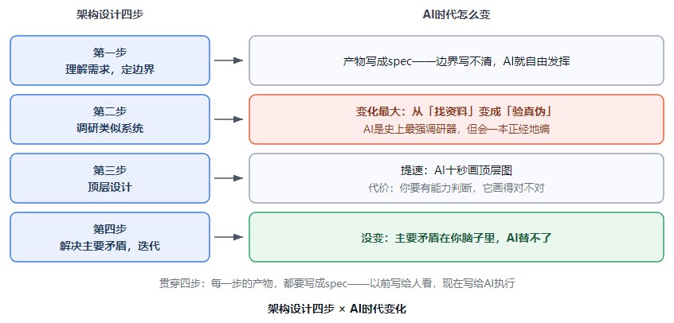

AI时代怎么做架构设计：四步法及AI带来的变化
来源：微信公众号 归档日期：2026-09-15 抓取状态：成功 原文字符：3427｜配图：5 张
摘要速览
- 架构设计四步：①理解需求、定义系统边界；②调研已有类似系统；③顶层设计；④解决主要矛盾、迭代设计。
- 最容易被忽略、也最值得多花时间的是第二步调研。
- 两大理念：脱离业务的架构设计都是耍流氓；架构不只是设计出来的，更是迭代与演进而来的。
- AI 时代四步仍成立，但第二步从"找资料"变成"验真伪"——AI 是最强调研器却会一本正经地幻觉，方案只当线索不当结论；第三步顶层图可 AI 辅助但要能判断对错；第四步找主要矛盾 AI 替不了。
- 贯穿四步的变化：每一步的产物都要写成 spec——以前写给人看，现在写成 spec 给 AI 执行，写不清 AI 就自由发挥。
核心内容
1. 四步法
- 理解需求，定义系统边界：和产品确定功能需求，根据业务确定性能需求，明确系统哪些要做、哪些不做。
- 调研已有的类似系统：你的系统是业内首创吗？如果不是，看类似系统怎么做架构设计，参考成熟方案事半功倍。作者强调这一步最容易被忽略、最值得多花时间。
- 顶层设计：设计核心组件及组件间交互方式——要不要 cache、要不要 mq？单体还是微服务？RDB 还是 NoSQL？产出粗略架构图与核心需求流程图。
- 解决主要矛盾，迭代设计：针对顶层设计中的主要矛盾细化，解决一个再找下一个，直到功能与性能需求全部满足。迭代中可能发现顶层设计缺陷，需优化甚至推翻——很多系统运行几年就要重构，往往是当初的顶层设计已解决不了今天的主要矛盾。
2. 两大理念
- 任何脱离业务的架构设计，都是耍流氓。
- 架构不只是设计而来的，更是迭代与演进而来的。
3. 案例：分类信息平台四步走
业务需求："1 万属性，100 亿数据，每秒 10 万吞吐的分类信息平台，像 58 同城一样，2 个月能上线吗？"
- 第一步：品类繁多（招聘、房产、二手、黄页），帖子 schema 不固定；典型场景发布/浏览/搜索，每个属性都可能被搜索；数据量大、吞吐量大、实时访问、延时敏感。
- 第二步：调研国外 Craigslist（分类信息做得最早最成熟）——品类扩展靠垂直拆分；属性扩展用 MongoDB 的 schema-free 特性；搜索从索引演进到独立搜索服务；大数据量高并发靠水平切分、服务化、缓存降压。
- 第三步：业务垂直拆分、微服务分层集群化、数据库水平切分、缓存降压。
- 第四步三个主要矛盾：多品类帖子数据分开存储导致核心流程太复杂→统一帖子中心 IMC；多品类属性的分级、扩展与校验→统一分类管理 CMC；大数据量高并发跨品类多属性搜索→统一检索服务 E-search。
4. AI 时代的变化
- 步骤二变化最大：以前翻资料、看源码、读博客，短则几天长则几周；现在问 AI 秒回，业内已有系统它几乎都"见过"——AI 是史上最强的调研器。但它会一本正经地编，方案说得有鼻子有眼、出处可能是幻觉。所以第二步从"找资料"变成"验真伪"：AI 给的方案当线索，不当结论。
- 步骤三提速：顶层架构图 AI 可辅助、互动修改，但人必须有能力判断它画得对不对。
- 步骤四没变：主要矛盾在哪儿 AI 不知道——你的业务、你的数据、你的流量曲线都在你脑子里，找主要矛盾是架构师的功课。
- 贯穿四步：每一步的产物（需求边界、调研结论、顶层组件、迭代方案）都要写成 spec。以前写在文档里给人看，现在写成 spec 给 AI 执行；写不清的，AI 就自由发挥。流程没变，交付物变了。
5. 作者对"调研"辩护
面对"别的架构设计方法里没有这一步"的质疑，作者明确声明调研非常重要、一定要多花时间：不行的程序员看谁的代码都是屎；不行的架构师才会认为自己的方案最牛逼、别人的方案都是屎，但其实自己原创的大部分方案才是屎。保持开放心态、借鉴优秀方案，是优秀架构师的核心品质。
可执行启发
- 做任何方案前，把第二步调研当成独立阶段排时间，明确产出"调研结论 spec"而不是印象。
- 用 AI 调研时固定动作：先让它列候选系统与出处，再逐条核验来源真伪，只把可验证的部分写进结论。
- 每步产物都写成可执行 spec（边界、组件、接口、验收），而不是只给人读的文档；写不清的地方就是风险点。
- 迭代时显式记录"当前主要矛盾"，避免顶层设计被悄悄沿用超过其有效期。
我的想法
（待补充）
关联
- 前篇：《架构图都让 AI 画了，架构师还能干什么？（1/100）》
- 补充材料：《1 万属性，100 亿数据，每秒 10 万吞吐，架构如何设计？》
归属：[[02-输入/按主题/认知与思维/_index|认知与思维]]
原文沉淀
目录
《AI时代的架构设计100讲》 第2讲：究竟怎么做架构设计？
AI时代，架构设计变了吗？架构师的职责变了吗？准备新起一个AI时代的架构设计系列，初定100讲，每周更新，这是第2讲。
上一讲，聊了什么是架构设计。这一讲，聊聊AI时代，怎么做架构设计。
做了多年架构设计，很多人连架构设计的关键流程都不知道，更别提怎么用AI工具来辅助架构设计了。系统上线了不少，需求做了不少，但基本毫无方法，全凭想象。
画外音：说的是不是你？
总的来说，架构设计有四步。最容易被忽略的，是第二步。
画外音：别人写文章，都说最后一步最重要。我偏说第二步。
第一步，理解需求，定义系统边界。
和产品确定功能需求，根据业务确定性能需求。明确系统哪些要做，哪些不做。
第二步，调研已有的类似系统。
你的系统，是业内首创吗？如果不是，看看类似的系统是怎么做架构设计的。参考成熟的方案，事半功倍。
这一步，最容易被忽略，也最值得多花时间。
第三步，顶层设计。
设计核心组件，以及组件之间的交互方式。要不要cache，要不要mq？单体还是微服务？rdb还是nosql？产出系统的粗略架构图，以及核心需求的流程图。
第四步，解决主要矛盾，迭代设计。
顶层设计完，哪里是主要矛盾？针对它细化设计。解决一个，再找下一个，直到功能需求与性能需求全部满足。
注意，迭代过程中，可能发现顶层设计的缺陷——优化它，甚至推翻它。很多系统运行几年就要重构，往往就是当初的顶层设计，已经解决不了今天的主要矛盾了。
这也是我推崇的两大架构设计理念：
- 任何脱离业务的架构设计，都是耍流氓；
- 架构不只是设计而来的，更是迭代与演进而来的。
举个例子，把四步走一遍。
业务需求："1万属性，100亿数据，每秒10万吞吐的分类信息平台，像58同城一样，2个月能上线吗？"
第一步，理解需求，定边界。 品类繁多：招聘、房产、二手、黄页……帖子的schema不固定。 典型场景：发布、浏览、搜索——每个属性都可能被搜索。 性能要求：数据量大，吞吐量大，实时访问，延时敏感。
第二步，调研类似系统。 国外的Craigslist，分类信息做得最早也最成熟。调研它的关键设计：品类扩展靠垂直拆分；属性扩展用MongoDB的schema-free特性；搜索从索引演进到独立的搜索服务；大数据量高并发，靠水平切分、服务化、缓存降压。
第三步，顶层设计。

业务垂直拆分、微服务分层集群化、数据库水平切分、缓存降压——大方向，就把握住了。
第四步，找主要矛盾，逐个迭代。 矛盾一：多品类帖子数据分开存储，核心流程太复杂——统一帖子中心IMC。

矛盾二：多品类属性的分级、扩展与校验——统一分类管理CMC。

矛盾三：大数据量、高并发、跨品类多属性搜索——统一检索服务E-search。

那么问题来了，到了AI时代，这四步还成立吗？
成立。但每一步的玩法，变了。
步骤二，变化最大。
以前调研，翻资料、看源码、读博客，短则几天，长则几周。
现在问AI：业内类似的系统，架构是怎么做的？它秒回。业内已有的系统，它几乎都"见过"——AI是史上最强的调研器。
但它有个毛病：会一本正经地编。方案说得有鼻子有眼，出处可能是幻觉。
所以，步骤二从"找资料"，变成了"验真伪"。AI给的方案，当线索，不当结论。
步骤三，提速了。
顶层架构图，AI可以辅助，我们和AI互动进行修改，上一讲聊过，不展开。但我们必须要有能力判断，它画得对不对。
步骤四，没变。
主要矛盾在哪儿？AI不知道。你的业务、你的数据、你的流量曲线，都在你脑子里。找主要矛盾，是架构师的功课，AI替不了。
还有一个贯穿四步的变化：每一步的产物，都要写成spec。
需求边界、调研结论、顶层组件、迭代方案——以前写在文档里给人看，现在写成spec给AI执行。写不清的，AI就自由发挥。
画外音：流程没变，交付物变了。

总结
- 架构设计四步：理解需求定边界、调研类似系统、顶层设计、解决主要矛盾迭代设计；
- 最容易被忽略的，是第二步调研；
- 两大理念：脱离业务的架构设计是耍流氓；架构是迭代与演进而来的；
- AI时代，流程没变：调研变成验真伪，顶层提速，主要矛盾不变，每一步的产物spec化。
有人问，第二步借鉴已有成熟系统的方案，在别的架构设计方法中，没有看到过这个步骤呀？莫不是搞笑的吧。
我非常严肃地声明，这个步骤非常重要，调研一定要多花时间。不行的程序员，看谁的代码都是屎；不行的架构师才会认为，我的方案最牛逼，别人的方案都是屎，但其实，自己原创的大部分方案才是屎。
保持开放的心态，借鉴优秀的方案，是优秀架构师的核心品质。“借鉴”这一点，任何不接地气的架构方法，都不会有人说。
知其然，知其所以然。
思路比结论更重要。
补充阅读材料：
上述案例架构设计方案细节，详见：
4000字，慎入。
前篇简介：
交流讨论：
AI时代，你觉得利好大龄架构师吗？
归属：[[02-输入/按主题/认知与思维/_index|认知与思维]]